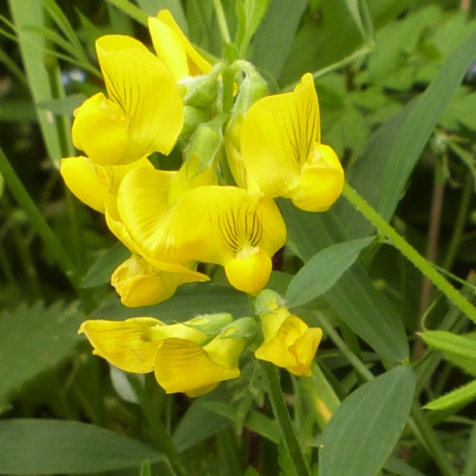
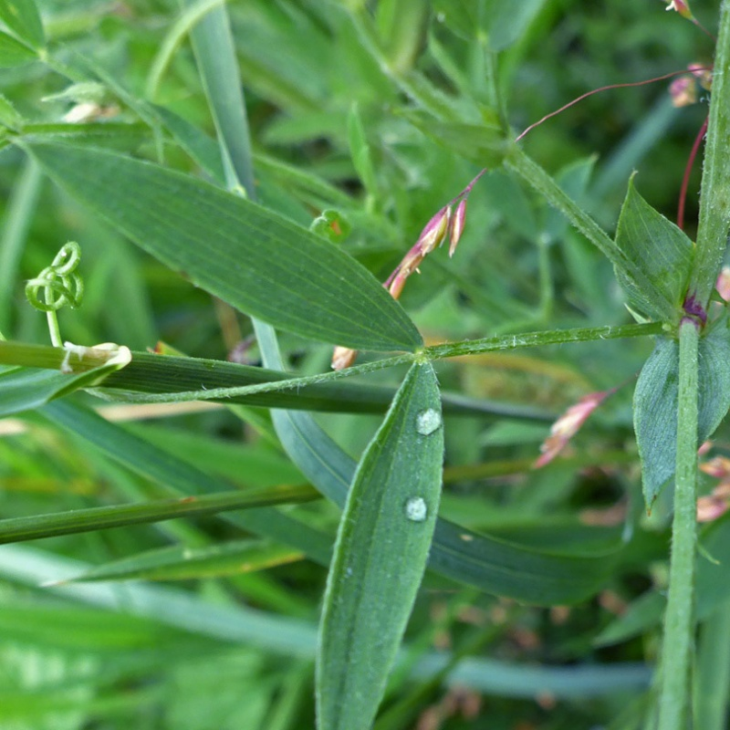

 
Lathyrus pratensis
Common names
Meadow Pea
Meadow Vetchling
Deutscher Name
Wiesen-Platterbse (flat pea)
Family
Fabaceae
Family common name
Legume Family
Blooms
June - July
Habitat
Meadows. Edges of woods and tracks. Damp, humus soils, 300 to 2000 m.
Range Map